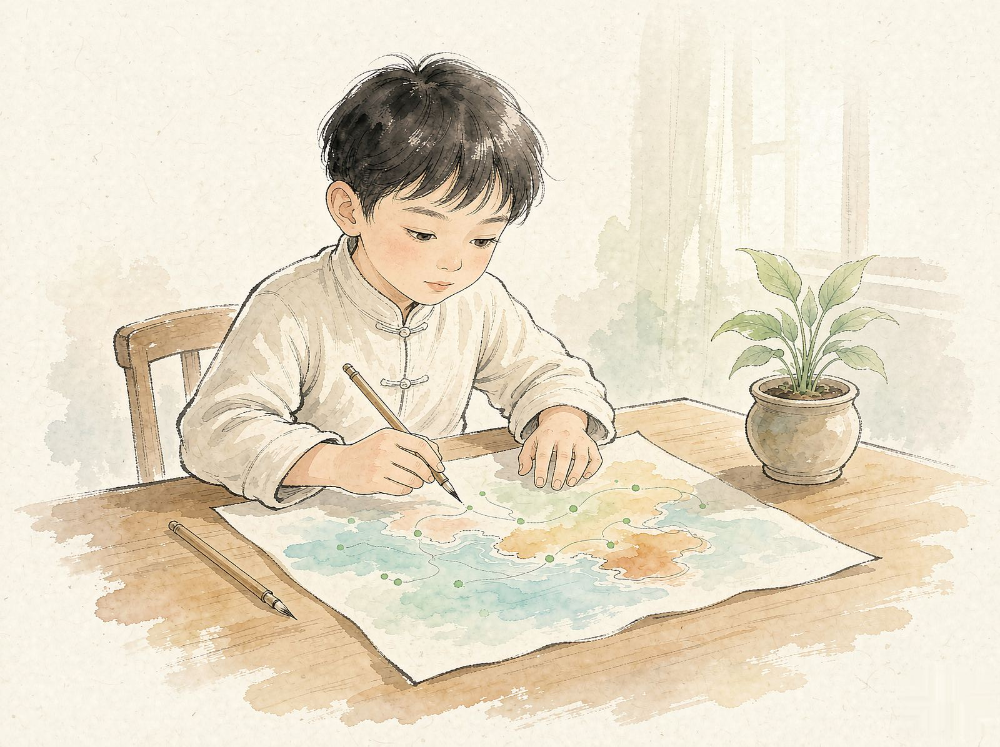

此植物，遍水陆
对比前文四渎、疆域行省：疆界是人划定的分别，而植物的生机，不被人设立的边界阻隔。俗见勘破：不是单纯讲博物分布。水陆是一组阴阳之象——土陆为阴静承载，水为流通滋养，阴阳和合之处，生机便能发生；生机没有固定疆界，遇合适因缘便能显现。
前面我们知道大地能够生长花草树木。
经文接着告诉我们：这类植物，陆地有，水里也有，遍布各处。
山坡、原野、林间长着草木；池塘、湖泊、江海之中，也有水草、水藻、荷花。

只要水土、阳光这些条件具足，生机就会萌发，不会因为我们划分的地界而停止生长。
每一处水土，都有适配它的生命。天地的生机，广阔周遍。

落到心上理解：生机周遍，不受人为边界束缚。我们的心性也是如此，本自周遍，不因环境、境遇的分别而隔断；有外缘滋养，就自然起用。
认为疆界、处境是牢不可破的阻隔，生机只能在特定地方才有；认定自己只能在某一种环境、身份里才能安心。
水陆只是相上的划分，生机本体周遍，因缘具备即现；境虽有别，觉性不分水陆。
- 植物的生机遍布水陆，不受人为边界限制。
- 水陆只是形态环境的差异，不是生机的界限。
- 因缘合适，生命就能萌发；外缘改变，生命形态随之调整。
- 周遍不息，是天地生机本来的样子。
一、勘俗见。不只做自然科普。承接上一课草木之德，进一步讲生机的周遍性，对应前面「三才、天地人」的格局。
二、现代对照。带孩子观察水生、陆生植物，看见生命适应不同环境；引申到人心，不要自我设限，画地为牢。
三、承接常变主线。水陆环境千差万别，是可变之相；生生之机周遍不变，是常。
四、承接教与学二分。家长引导看见生命跨越边界的力量，属施教一侧；孩子学习不自我设限、不被境遇困住，是自主修习。
接上选择力练习：外境分水陆，本心无藩篱。
此植物，遍水陆
一 · 字义与句读植，植根而立；物，有质有形之生命。遍，周匝无遗。
全句释义：草木一类生命，陆地、水泽之中，无处不生。由草木之体，扩展开生机周遍之象；承接坤德化生，彰显道体周流，不囿于一隅。
二 · 命题考辨（一）水陆的象义。陆，土也，坤之静载；水，流通滋养，坎之流动。一静一动，一固一流，阴阳和合。凡阴阳相济之处，便能化生。人划分的国土、省界，是后天假名；造化生机不依从这些假名边界。
这和「行省、三十五」形成对照：行省是人设立的区划，可以改、可以合并；生机的周遍，不属于人为划分的体系。
（二）对照当下现代语境。生态学讲生态位、生境，不同植物适配不同的水土、光照条件。经文不取物种分类，取其「周遍」之象。我们习惯用各类标签、边界把世界切分开：地域、身份、圈层、学历。而这一句恰是提醒：边界是认知的切片，真实的生机、真实的缘起，本来流通无碍。
（三）般若范式互参。水陆、植物，皆是缘起假名。联动空杯模型：虚空自性是本体，水陆是外缘境相，草木是缘起显现；境相有水陆之别，虚空不曾被分割成两块。
呼应「本乎数」：水、陆为阴阳两象，以二分法显周遍之理；二是分别之数，本体不二。
（四）延伸义理。《金刚经·妙行无住分》以「东方虚空可思量不……四维上下虚空可思量不」设问，明虚空不可思量、福德亦不可思量。此句正是借眼前万物显「周遍」。山河水陆是相，如同五蕴；生机所依之本体，不在水上、不在陆上，却能于水陆之中随缘显发。修行之中的「遍照」，正是这一层：境有分限，觉照不分。
三 · 跨典互参《道德经》：「大道泛兮，其可左右。」大道周流，如同生机遍水陆，无有边界。
《庄子·知北游》：道在蝼蚁，在稊稗，在瓦甓，在屎溺。道不拣择处所，水陆草木之中，随处可见。
串联前文：前面人伦、国土都是分别建立的秩序；至此向外观物，见大道周遍，超越一切人为分界。
四 · 与前后课的张力呼应「人不学，不知义」：义在于透过水陆的分别之相，体会大道周遍无隔。
呼应「玉不琢，不成器」：打磨自心，就是慢慢打破内心自我划定的重重边界。
呼应「教之道，贵以专」：见闻之学，从一物之生，通达周遍不息的造化之道。
次第链条继续延伸：…… → 地所生，有草木 → 本课
一、生机遍在，为什么有的地方寸草不生？是本体有缺，还是因缘不足？
二、周遍无隔，和善恶拣择如何共存？大道周遍，何以亦生毒草？
三、心性周遍，为何凡夫会强烈感受到「阻隔、隔阂」？隔阂从何而起？